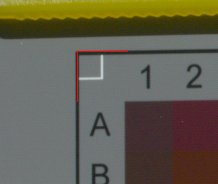

| Home | Monitor Tab | Preferences Tab | Profile Checker | Profile Identification | Profile Parameters | Monitor Values Dialog | Set Gamma Dialog | Install Reference File Dialog | UFRAW Tutorial |
LPROF is an open source application that creates ICC profile for cameras, scanners and monitors.
Building a scanner or camera profile
Camera
and scanner profiles are built by using a thing known as an "IT8 target".
IT8 targets are just a photo with a set of color patches. There are
known colorimetric measurements for each of these patches. There is
also a standard way to specify these measurements, the IT8/CGATS file
format. Each IT8 target comes with a IT8/CGATS file
that contains the colormetric measurements for that target.
IT8/CGATS is a way to encode data that is both, human and
machine readable. You can open any IT8/CGATS reference file
with a text editor. You can even modify the
contents. Since it is a standard, most color management systems
will accept it including LPROF.
A IT8/CGATS reference file contains measurements for a set of color patches.
The measurement of each patch can be the device colorant values
(the RGB or CMYK values in the 0..255 range) or the tristimulous values (XYZ
or Lab) and some statistical data.
A IT8/CGATS reference file looks like this:
-----------------------------------------------------------
IT8.7/2
ORIGINATOR "Wolf Faust"
DESCRIPTOR "L* a* b* Batch average data (light D50, viewing angle 2)"
MANUFACTURER "Wolf Faust - http://www.coloraid.de"
CREATED "January 07, 2002"
PROD_DATE "2001:12"
SERIAL "DIN A4 R012020"
MATERIAL "Kodak Professional Digital 3 - Non-Glossy"
NUMBER_OF_FIELDS 9
BEGIN_DATA_FORMAT
SAMPLE_ID XYZ_X XYZ_Y XYZ_Z LAB_L LAB_A LAB_B LAB_C LAB_H
END_DATA_FORMAT
NUMBER_OF_SETS 288
BEGIN_DATA
A1 3.25 2.71 1.94 18.86 11.18 2.87 11.55 14.41
A2 4.07 2.73 1.60 18.91 23.59 6.54 24.49 15.48
A3 5.79 3.42 1.75 21.67 33.38 9.60 34.73 16.05
A4 4.28 2.66 1.46 18.62 27.73 7.59 28.75 15.32
A5 11.97 10.30 7.42 38.38 15.04 4.16 15.61 15.47
.... etc ...
------------------------------------------------------------
The target manufacturer provides a IT8/CGATS file containing these measurements for the target. So, the target along with the targets IT8/CGATS reference file is gives us a set of KNOWN (calibrated) colors. We must then, tell the profiler which RGB values our scanner or camera returns for each of these patches.
LPROF
can grab the RGB values of each color patch on an IT8.7
target image. In order to generate a profile, we need the RGB and Lab values
for each patch. Let's outline the scanner/camera profiling
procedure. First we will detail how this is done with a
scanner and then we will detail what is different when profiling a
camera.
First you should be aware that getting a good capture of the IT8.7 image is 80% to 90% of getting a good profile.
Bit depth: You will need 24 bits (8 bits per color) per
pixel at the very least but using 48 bit (16 bits per color) images is
best.
Gamma:
On most scanners you can select the gamma to be used for scanning the
image. In general you should use a gamma between 2.2 and 3.0.
A Gamma 2.2 has the additional benefit of being close to the sRGB
gamma, and this means the uncorrected Image will "look nice" on an
"average" monitor. It is also near to perceptual gamma. Gamma 2.4 has
the additional benefit of being closest to perceptual space, and this
is a very good reason to use this value. Less that 2.2 (and of course
the infamous 1.0) can generate a significant loss of detail in shadows while only to
giving a slight improvement of highlight detail. Don't use this unless your are
using 16 bits per sample, and even then, don't do it unless you
know what are you doing! Gammas around 2.4 are best for flat bed
scanners and film scanners with limited dynamic range. With
high dynamic range film scanners values closer to 3.0 may be
best. Don Hutchson of Hutch Color, for example, recommends a gamma of 2.8 for
high dynamic range scanners. But for flat bed scanners more
than 2.4 (up to 3.0) looses some highlight detail with no gains in
shadow detail.
Turn off all color management, color enhancing and tweaking in scanner
driver. Set brightness, contrast and hue (if available) to default
values. Make sure that all controls are locked down and that
the scanner software is not doing any automatic adjustments. These
setting are supposed be your working scanning mode, so set all of them
to reasonable defaults.
IMPORTANT: The profile will only be valid with the settings used to capture the IT8.7 target!
Store the IT8.7 image using one of the supported formates listed below depending on the formats supported by your platform and/or scanning software. LPROF supports the following formats for IT8.7 images:
With 8, 16 or 32 bit integers or 32 or 64 bit floating point values per color channel if these higher bit depths are support by the image file format.
DON'T use JPEG! It
is unsuitable for this purpose because of the loss of information that
results when the data is compressed. You could use JPEG on final
images,
but not in the profiling process.
Without help, this could be a huge task. There are over 250
patches in a typical IT8.7 target (some have as many as 288) and taking each sample by hand would be tedious at best. With
the help of the LPROF this is an easy task.
Before we can proceed the reference file for the target must be installed so that LPROF can find it. Please see Install Reference File Dialog for details. Start LPROF and on the Camera/Scanner
Profiler tab press the "Load Image" button. Select the image of target you scanned in step 2.
I
will use the scandmo.png image located in the "data/pics" directory as
a sample. This is a Kodak film target, scanned with a scanner that adds
a huge magenta cast. Don't worry, the profile will turn this one into a
nice looking image and the magenta cast will help demonstrate how
effective profiles generated with LPROF are. The reference file for
this IT8.7 target
(e3199608.TXT) is also located in the "data/pics" directory.
Since this is a Kodak target in the Install Reference File Dialog select the "IT8.7 19+3 (Kodak) column picker"
template when installing the reference file. To "measure"
the RGB values of the target image you use
the mouse to place the pick template over the patches. You can do
this by clicking on each corner of the of the target
image. As each corner is selected with the mouse
you will see a mark placed on the corner. If you do not see this
mark then either you have not correctly installed the reference file or
you have not selected the correct reference file.

When
all four corners are marked the picker template will appear
superimposed on the target image. Assure that all green
rectangles
are inside the patches. Failure to do so will result in a wrong
profile! You can adjust the locations of the corner marks to fine tune
the location of the picker template. On some images you might
need to make some fairly large adjustments in the locations of the
corner marks to get the template to line up. You can also adjust
the
relative size of "hot areas" by setting the % in "safe frame" on
"Preferences" tab. A smaller safe value results in a larger "hot"
zone. Normally there is no need to touch anything other than
perhaps making adjustments to the placement of the corner marks.
Once
you were happy with the location of the patch grabber "hot" zones you
now
have the correct reference sheet of the target, which were given by
Kodak in the targets reference file, and the RGB values obtained by the
scanner. Now we can compare
these to create a profile.
From this point on it is quite easy. First specify the profile filename. Press the "..." button placed on the right of "output profile file", to select the location where the profile will be saved. On Linux/Unix systems this will default to $HOME/.color/icc. On Windows systems this will default to the Windows profile directory (on most systems c:\WINDOWS\SYSTEM32\spool\drivers\color). But you can override this. The file name for the new profile could be "scandmo.icm". You can now fill in some information to help locate the profile latter. Press the "Profile Identification" button to being up the Profile Identification Dialog, and fill in the fields. You are now ready to generate the profile. Press the "Create Profile" button to launch the profile creation process. After a few seconds, you will have a profile for your scanner.
You can inspect the profile in some detail by pressing the Profile Checker button.
If you do you will see the the demo profile has the an average dE (delta E - amount of
error) that is
about 1.03 and a peak dE of about 4.0, which is very reasonable. Now, we can reduce the error
level, but it will take a little more time to generate the profile. To do this press the "Parameters Parameters"
button, and select "33 - huge" from
the "Resolution (CLUT points)" radio button group. Also in
the Profile verbosity group select the "Verbose, store anything" radio
button. Press the "OK" button
to close the "Profile Parameters and Tweaks"
dialog and save these settings. Next select the "Create Profile"
button. Now the
profile generation
process will take slightly longer, but the obtained profile is improved
with an average dE is about 0.8 and the peak value is about 3.6.
Again you can use the "Profile Checker"
to inspect your profile. In the Profile Checker have a look at
the Shaper TRC curve in the curves tab. Notice that the green
curve is significantly different from the red and blue curves.
Since green is the complement of magenta this is exactly what you would
expect for a device that was producing images with a magenta cast.
Let's check how this profile affects the original Image. In the "Preferences"
tab set the "input profile" to the newly created scanner
profile, and "monitor profile" should be set to either a custom profile
that was created using the monitor profiler (see next section) or a generic profile such
as sRGB. In the "Preferences" tab check the "color manage display" check box and then go to the "Camera/Scanner Profile" tab to
see the results. The girl's Image is dark, this is normal.
However, the rest of patches are hugely modified, the gray scale
should appear smooth and without any cast, as well as the overall magenta tint should disappear.
Copyright © 1998-2005 LPROF. All Rights Reserved.
| Copyright © 2005 LPROF | Trademarks | LPROF 1.11
|